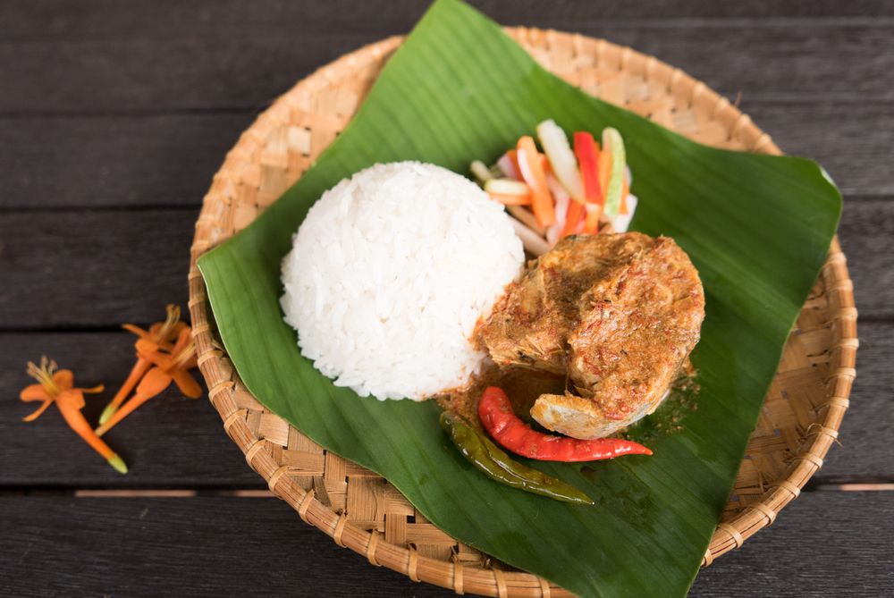

Nasi Dagang

A delicious Malaysia's Traditional Dish called Nasi Dagang served with Tuna Curry and a side pickled vegetables
Ingredients
Nasi Dagang
- 1kg nasi dagang rice (soaked in water overnight)
- 4cm young ginger (julienned)
- 4 shallots (julienned)
- 2 cloves garlic (julienned)
- 1 pandan leaf (knotted)
- 100ml coconut milk
- 500ml water
Tuna Curry (Gulai Ikan Tongkol)
- 1 1/2kg ikan tongkol (tuna) (cleaned and cut into pieces)
- 7 shallots (chopped)
- 20cm turmeric root (chopped)
- 4cm young ginger (chopped)
- 2cm galangal (chopped)
- 120ml oil
- 300g fish curry powder
- 500ml coconut milk
- 20 bird's eye chillies
- 2tbsp sugar (heaped)
- 1tbsp salt (heaped)
Pickled Vegetables
- 500g cucumber (sliced into sticks)
- 500g carrots (sliced into sticks)
- 150g red chillies (sliced)
- 1 small red onion
- 100g sugar
- 100ml white vinegar
To Serve
- 1 round cabbage (julienned)
- 1 carrot (julienned)
- 1 red onion (julienned)
- 1 cucumber (sliced)
- 5 eggs (boiled and halved)
Instruction
To cook Nasi Dagang
- Drain the rice, then place in a rice cooker filled with 1.5 litres of water.
- Cook for about 15 minutes until rice is half-cooked.
- Add the remaining ingredients and steam until rice is fully cooked.
To cook Tuna Curry
- Sprinkle some salt on the fish and steam until cooked, about 20 minutes.
- Place the shallots, turmeric root, young ginger and galangal into a blender and blitz to form a paste - add some water if necessary.
- Remove from heat and set aside.
- Heat a pot over medium heat, add the oil and saute the paste.
- Once fragrant, add the curry powder and stir until brown, about 15 minutes.
- Pour in the coconut milk and bring to a boil.
- Add the fish, bird's eye chillies, sugar and salt and cook for 20 minutes.
- Remove from heat.
To make Pickled Vegetables
- Place all the ingredients into a bowl and mix well.
- Leave to pickle for at least 1 hour.
To Serve
- Pack the rice into a rectangular container and unmould onto a plate or dulang (tray) lined with a banana leaf.
- Ladle some gulai ikan tongkol into a bowl and place on the tray, along with the acar and serving accompaniments.